直近1週間の人気フィード
はてなブックマーク数を元に新着優先で並べ替え

「先週何したっけ？」をゼロに：Obsidian + Claude Codeを業務アシスタントに 529
529 エムスリーテックブログ
エムスリーテックブログ
AI・機械学習チームの池嶋 (@mski_iksm)です。 このブログはAI・機械学習チームブログリレー 10日目の記事です。 前日は鴨田さんによる「BigQueryのCronJob向けQAテストを自動化した話」でした。 2025年6月現在、MarkdownエディタのObsidianが注目を集めています。 これはLLM（大規模言語モデル）の活用が普及し、ObsidianとAIを組み合わせることで、単なるメモツールを超えた「知的業務アシスタント」として機能するようになった点が要因の1つと言えるでしょう。 従来のメモツールが「記録」に留まっていたのに対し、AIとの連携により「記録→検索→分析→洞察…
1日前
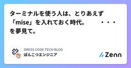
ターミナルを使う人は、とりあえず「mise」を入れておく時代。 ・・・を夢見て。 399 DRESS CODE TECH BLOGのフィード
DRESS CODE TECH BLOGのフィード
「mise」ってすごい使いやすいんですよ。miseとは GitHubリポジトリの説明書きに 「dev tools, env vars, task runner」 と書かれているrust製のcliツールです。この記事ではmiseヘビーユーザーの私が推したい生産性の上がる機能を紹介するので、miseを初めて知った人も、知ってるけど使ってないって人も、ぜひ一読してみてください。ちなみに最近話題になりやすいAIツールのcliパッケージなどもmiseで管理できたりします。https://github.com/jdx/misehttps://mise.jdx.dev/ 推したい機能...
3日前

Goで作られたシステムをRuby on Railsに移植しています 112 STORES Product Blog
STORES Product Blog
STORES でエンジニアをしている片桐です。 STORES では店舗運営に関するさまざまなプロダクトを提供しています。これらのプロダクトは元々別の会社で運営されてきた完全に異なるプロダクト群で、アカウント体系から全く異なるシステムになっていました。近年はこれらのシステムを本格的に統合する取り組みを進めてきており、その中で統合のためにいくつかのシステムが新たに作成されてきました。 ある程度統合が進み、うまくいったところ・いかなかったところが見えてきた中で、これまでに作ったシステムの技術選定・システムの役割に対する課題感が見えてきました。 現在弊社ではこの課題を解決していくプロジェクトを進めてい…
3日前
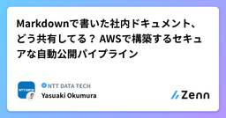
Markdownで書いた社内ドキュメント、どう共有してる？ AWSで構築するセキュアな自動公開パイプライン 97 NTT DATA TECHのフィード
はじめにはじめまして。NTTデータの奥村です。最近は内部向けのちょっとしたドキュメントをMarkdown形式で記載することは結構あるのかなと思います。GitHubなどのリポジトリサービスやNotionなどのドキュメント共有サービスを全員が利用できればよいのですが、コストや組織のポリシーなどの関係でそうしたサービスが利用できないケースだと、関係者限定でMarkdownのファイルを見やすい形で共有するのに困ることがあります。本記事では、上記のようなケースで役に立つ仕組みをAmazon Web Services (AWS)を利用して構築する方法を紹介させていただきます。 全体構成...
3日前
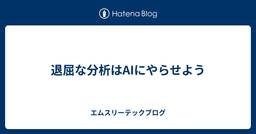
退屈な分析はAIにやらせよう 97 エムスリーテックブログ
AI・機械学習チームの氏家 (@mowmow1259)です。 このブログはAI・機械学習チームブログリレー 8日目の記事です。 前日は高田さんによる「BETWEENに気をつけろ！ BigQueryの日次集計で罠にハマった話」でした。 最近LLMによるVibe Codingが世間を賑わせています。 エムスリーでも積極的にコーディングエージェントの導入が進んでおり、かくいう私もClaude Code君がいないと生きていけない体にされてしまいました。 コーディングエージェントのおかげで典型的な開発タスクはかなり効率化されてきているものの、面倒なタスクもまだまだ残されています。 分析です。 前日の高田…
3日前
pg_duckdbとDuckLakeがもたらすOLAP統合の未来 61 NTT DATA TECHのフィード
注目を集めるPostgreSQL＋Analytics先日、SnowflakeとDatabricksのそれぞれの年次イベントでPostgreSQLに関連する企業の買収が大々的に発表されました。両社は分析系（OLAP）のソリューションを提供する比較的大きなベンダーであり、過去にはOLTP系への進出を目指したデータストアの開発が注目されたこともありました（SnowflakeのUnistoreが典型です）。彼らは今後、PostgreSQLを自社がカバーできていなかった領域で適用することで、現在のメガクラウドのようにOLTP用途のRDBとOLAPのソリューションを統合してくることが予想さ...
3日前

60万行を超えるフロントエンドのリアーキテクチャとCI戦略 16 Findy Tech Blog
Findy Tech Blog
こんにちは。こんばんは。 開発生産性の可視化・分析をサポートする Findy Team+ 開発のフロントエンドリードをしている @shoota です。 ファインディのフロントエンドでは多くのプロダクトでNxを用いたモノレポを構築しています。 tech.findy.co.jp Findy Team+のフロントエンドもNxを採用し、各パッケージ間の依存関係の管理やライブラリのマイグレーションなどの恩恵を受けています。 なかでも強力なキャッシュ機構をベースとしたCIの高速化はなくてはならない存在となっています。 以下は、このブログの執筆時点での Findy Team+のフロントエンドリポジトリが実行…
4時間前
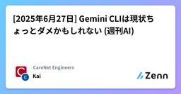
[2025年6月27日] Gemini CLIは現状ちょっとダメかもしれない (週刊AI) 42 CareNet Engineersのフィード
こんにちは、Kaiです。いやぁGemini CLI（GC）来ましたね。早すぎです。スラッシュコマンドの作りとかを見ても、Claude Code（CC）をベンチマークにして作ったのは明らかだと思いますので、基盤レベルのAIプロダクトが流行ったら、1ヶ月程度でコピーされる世界観だと思った方がいいですね。さてGemini CLI、まだ十分ではありませんがとりあえず触り始めています。ドキュメントとテストを整備して、TDD準備を終えた状態のサンドボックスプロトタイプリポジトリを与え、自走させて完成できるかというPoCをやってみました。以下はその感想です。Gemini CLIClau...
3日前
【神アプデ🎉】Clineが無料枠/サブスク対応！Gemini CLIとClaude Maxを利用すればコストを気にせず使い倒せるぞ！！ 78 株式会社マインディア テックブログのフィード
3秒まとめGemini CLI連携で、1日1000回まで無料でAIを使えるように！Claude Maxユーザーは、追加料金なしでClineからモデルを呼び出し可能に！開発スタイルに合わせて、賢くAI開発環境を選べる時代が来た！ はじめに「AI開発、便利だけどトークン費用が気になる…」「自分のClaudeサブスク、もっと活用できないかな？」エンジニアの皆さん、一度はこう思ったことはありませんか？ぼくもその一人です。個人開発や学習でAIを使っていると、どうしてもコストが頭をよぎりますよね。もっと気軽に、もっとパワフルにAIの恩恵を受けたい！そんな悩める開発者に、と...
3日前

LLMにコンテキストを効率よく渡すには？【前編】 〜大量のファイル群から欲しい部分だけ〜 13 Nealle Developer's Blog
Nealle Developer's Blog
はじめに こんにちは、ARCHチームの野呂です。 本当は近所の美味しいラーメン屋についてのテック（？）ブログを書こうと思っていたのですが、社内で行われている「LTL会*1」というイベントで共有するために作ったスライドがあったので、先にそれをブログにしたためました。 近所の美味しいラーメン屋は永久に不滅*2ですが、LLMの話題は賞味期限が短いからです。 コーディングエージェントなどのLLMに効率よく追加の情報を渡すためのTipsと、そのための基礎知識について書いておりますので、興味あれば是非ご一読ください。 でも、近所の美味しいラーメン屋についても後で絶対に書きますからね。 たとえ上司や同僚の反…
44分前
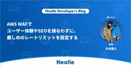
AWS WAFでユーザー体験やSEOを損なわずに、厳しめのレートリミットを設定する 35 Nealle Developer's Blog
SREの大木 (@2357gi)です。最近スノボのオフトレにトランポリンに行ったら、初めてスノボした時ぐらい体がバキバキの筋肉痛になりました。オススメです。 すでにAWS WAFを導入し、スクレイピング対策としてレートリミットも設定しているものの、GoogleBotなどをブロックしたくないため緩い閾値しか設けることができない状態だったのですが、「厳しめのレート制限でスクレイピングを遮断しつつ、Bot Control のラベリングを用いて必要な Bot を許可する」ことを実現したので、記事にしておきます。 背景 弊社はインターネット上で月極駐車場の検索から契約まで行えるwebサービスである「Pa…
3日前
Passkey認証の実装ミスに起因する脆弱性・セキュリティリスク 239 GMO Flatt Security Blog
GMO Flatt Security Blog
こんにちは、GMO Flatt Security株式会社 セキュリティエンジニアの小武です。近年、WebAuthn、特にPasskeyはパスワードレス認証への関心の高まりや利便性の高さから、普及が進んでいます。WebAuthnによるPasskey認証は強固な認証手段ですが、複雑な認証基盤の実装に不備があると、依然としてアカウント乗っ取りを含む従来のセキュリティリスクを払拭できません。本記事では、W3CのWorking Draft(2025年5月現在)である Web Authentication: An API for accessing Public Key Credentials Level 3 を読み解き、Relying Party(RP)としてPasskey認証を導入する際に実装で注意すべき点を説明いたします。
6日前
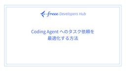
Coding Agent へのタスク依頼を最適化する方法: Pull Request 作成 Workflow 54 freee Developers Hub
freee Developers Hub
はじめに こんにちは、タイガーチームでエンジニアをしている横塚といいます。 この記事では Coding Agent へのタスク依頼を最適化していく過程を step-by-step で一緒に見ていきます。 お題は「Pull Request の作成」です。 コードは既に書いている コミット済みで git の work-tree はクリーンな状態 この状況から Coding Agent (Cline, Roo Code, Goose CLI, GitHub Copilot Agent, Claude Code etc…) に高品質な Pull Request を作成してもらうことを目指します。 TL…
4日前
バッチ監視改善 ~手動再実行のトイル削減とNAT gatewayコスト急増の失敗談付き〜 25 Nealle Developer's Blog
はじめに SREチームの森原(@daichi_morihara)です。今日はバッチの監視周りの取り組みについて共有していこうと思います。 これまではバッチのモニタリングに関して、エラーログの検知・対応のみの最低限の監視を行っている状態でした。そこでバッチ関連のオブザーバビリティの強化およびトイル削減のために以下の３つに取り組みました。 バッチ失敗時の自動再実行の設定 バッチ毎の実行時間や実行結果・インフラレイヤーのメトリクスをまとめたDatadogのダッシュボード作成 DatadogのAPM導入 それぞれの実装において得た学びや注意点を紹介していきたいと思います。 バッチのインフラ構成図 ニー…
3日前
API Key 無しで Gemini をセキュアに Google Apps Script から利用する 165 エムスリーテックブログ
本文に関係ないドッグランに行ったときの犬たち こんにちは、AI・機械学習チームの山本（@hiro_o918）です。 このブログは AI・機械学習チームブログリレー 5 日目の記事です。 これまでのリレー記事でも出てきたように、弊社でも AI を活用したプロダクト開発が進んでいます。 それに加えてビジネスサイドでも AI 活用が進んでおり、OSS 版 Dify を導入・運用したり、Google Workspace に付帯する Gemini を活用したりしています。 このような状況から、AI 機能の実装に関してビジネスサイドから相談を受ける機会が多いのですが、その際には利便性だけでなくセキュリティ…
6日前
Playwright移行プロジェクト奮闘記 〜現場で直面した3つの壁と、乗り越えるためのTips集〜 43 Nealle Developer's Blog
はじめに 本記事は、前回の記事「Playwrightへの移行 〜ノーコードツールから乗り換えた理由と、その裏側〜」 nealle-dev.hatenablog.com の続編です。 前回は、私がノーコードツールからPlaywrightへの移行を決断した背景や、準備・設計段階での工夫についてお話ししました。 今回はその続きとして、移行プロジェクトの現場で実際に直面したリアルな課題や、それをどう乗り越えてきたのか、そしてその過程で得られた実践的な運用ノウハウやTipsをご紹介します。 この記事が、すでにE2E自動化やPlaywrightを使い始めている方、そして実装や運用で壁にぶつかっている方にと…
4日前
10時間かかっていた遺伝的アルゴリズムをAWS Lambdaで高速化 8 Insight Edge Tech Blog
Insight Edge Tech Blog
こんにちは、Insight EdgeのLead Engineerの日下です。 今回は、DEAPライブラリを利用した遺伝的アルゴリズムをAWS Lambdaで分散並列実行した話を紹介しようと思います。 目次 目次 背景と課題 並列化の方法の検討 どこを並列化するか？ どのように並列化するか？ 実装の方針 呼び出し側コード Lambda側コード その他 Lambdaを呼び出すためのDEAPへのmap実装 呼び出し側コード Lambda側コード 今回の実装の工夫ポイント 改善の評価 まとめ 前提 クラウド基盤: AWS 言語: Python ライブラリ: DEAP 背景と課題 ある案件で、遺伝的アル…
2時間前

「Claude Code Week」既存事業で1週間AI縛りで開発したことで見えたゲームチェンジと開発フローの再構築の必要性 100 株式会社ログラス テックブログのフィード
!この記事は毎週必ず記事がでるテックブログ Loglass Tech Blog Sprint の97週目の記事です！2年間連続達成まで残り9週となりました！ はじめにログラスでエンジニアをしているナカムラ（@nakamura_meg)です。今回は、チームで実施した「Claude Code Week」の取り組みについて、得られた知見を共有します。※Claude Code関連の資料は一番下にまとめました なぜ今、強制的な変革が必要なのかAnthropic社のCEOであるダリオ・アモデイの発言が現実味を帯びてきました。「今から3～6か月もすれば、AIがコードの90%を書...
5日前
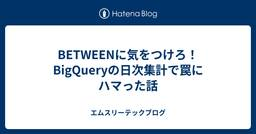
BETWEENに気をつけろ！BigQueryの日次集計で罠にハマった話 40 エムスリーテックブログ
こんにちは。AI・機械学習チームの高田です。このブログはAI・機械学習チームブログリレー7日目の記事です。 はじめに 私たちAI・機械学習チームでは、機械学習モデルの学習データ準備やデータパイプライン開発のために日次でのデータ集計をしています。これらの集計データは、モデルの精度評価や特徴量エンジニアリングにおいて重要な役割を果たします。 先日、月次レポートを作成する際に、とあるログデータの日次集計の合計値と月次集計の値に差異があることに気づきました。単なるデータ欠損にとどまらない重大なバグの可能性もあるため、原因を徹底的に追求することが必要でした。
4日前
複雑な教育サービスでのプロダクトマネジメント体制構築（立ち上げ編） 20 ドワンゴ教育サービス開発者ブログ
ドワンゴ教育サービス開発者ブログ
目次 目次 はじめに 私たちが向き合ってきた課題とここ4年の取り組み プロダクトマネジメント体制をどう設計したか 体制立ち上げ後、最初に取り組んでいること 体制の構築にあたって、大切にしていること これからやっていきたいこと おわりに We are hiring! はじめに こんにちは、ドワンゴ教育事業本部の吉原です。バックエンドエンジニアから企画開発エンジニアを経て、2022年から企画開発やデータ活用のセクションのマネージャーをしています。また、この2025年4月からはe-learningサービス全体を見渡して方向づけをしていくようなポジションも兼任しています。 ドワンゴ教育事業で運営してい…
3日前
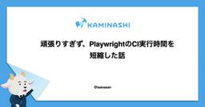
頑張りすぎず、PlaywrightのCI実行時間を短縮した話 136 カミナシ エンジニアブログ
カミナシ エンジニアブログ
カミナシのソフトウェアエンジニアisanaです。 カミナシレポートの開発に携わっています。 私たちのチームでは、Webアプリケーションの品質担保のため、Playwrightを用いたブラウザテストを実装し、GitHub Actionsで実行しています。しかし、このCIプロセスにおいていくつかの課題がありました。 他方、ソフトウェア開発においては日々寄せられるVoCに対応したり、新機能の開発を行うなかで、負債や課題を上手くハンドリングしていく必要があります。 本稿では、CIプロセスにおける課題をコスパよく解決するための改善策と、その過程で遭遇した「ハマったポイント」について、具体的な設定例を交えな…
6日前

英語が苦手なエンジニアが1年間本気で英語学習をした結果と学んだこと 78 Money Forward Developersのフィード
最初にまとめ私の職場では特にエンジニア組織のグローバル化が進んでいます私はそんな中、英語がほぼ話せない状態（CEFRレベル：A2）から入社し、1年間社会人として頑張れる範囲で英語学習を続けてきました大体一日2~4時間程度の学習時間 + 業務中の英語コミュニケーション の成果ですまだ小さな家族がおり、この程度の時間の確保が限界でした現在は「自分が興味のある社会情勢について、ある程度スムーズなプレゼンテーションができる」とされる(CEFR: B1+〜B2レベル)まで成長し、業務での英語コミュニケーションもある程度できるようになりましたこれから同じように弊社に入社して...
4日前
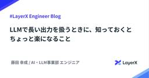
LLMで長い出力を扱うときに、知っておくとちょっと楽になること 32 LayerX エンジニアブログ
LayerX エンジニアブログ
こんにちは。AI・LLM事業部 LLMグループ エンジニアのkoseiです。 AI・LLM事業部ではエンタープライズのお客様向けの文書処理業務を効率化するプロダクト「Ai Workforce」を開発・提供しています。詳細は以下のリンクをご参考ください。getaiworkforce.com 直近も大手リース会社のお客さまにご導入いただきました。「Ai Workforce」が実際どのように利用されているのか、ご興味のある方は是非ご覧ください。 getaiworkforce.com さて、LLMを用いたアプリケーションを開発していると、LLMの出力が長いタスクって意外と遭遇しますよね。長文の要約、大…
4日前

AIサービス導入時にまずチェックすべき3つの観点 30 STORES Product Blog
AI導入推進担当者が、AIサービス（特にAIを用いたコーディングツール）導入時にまずチェックすべき3つの観点をまとめています。
4日前
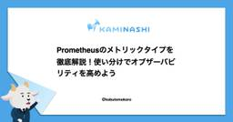
Prometheusのメトリックタイプを徹底解説！使い分けでオブザーバビリティを高めよう 58 カミナシ エンジニアブログ
カミナシの認証認可ユニットでソフトウェアエンジニアをしているトモ=ロウです。 早速ですが皆さんPrometheusはご存知ですか？ Prometheusは、システムメトリクスの監視に特化したオープンソースのモニタリングシステムです。時系列データを収集・保存し、強力なクエリ言語PromQLを使って分析することで、システムの健全性を詳細に可視化できます。プル型（Prometheusサーバが監視対象のシステムからメトリックをポーリングする形式）を採用している点が特徴的です。 私のチームではPrometheusを使ってメトリクスの収集・分析を行なっています。Prometheusの利用を検討する際に多く…
4日前
ラクス大阪開発組織のいま ～ 組織で価値を共有し続ける取り組み ～ 23 RAKUS Developers Blog | ラクス エンジニアブログ
RAKUS Developers Blog | ラクス エンジニアブログ
こんにちは。ラクスの大阪開発組織で統括責任者をしております、矢成です。 私たちラクスは、「ITサービスで企業の成長を継続的に支援します」というミッションのもと、BtoB SaaSを通じてお客様の業務課題を解決しています。 開発本部でも「顧客をカスタマーサクセスに導く圧倒的に使いやすいSaaSを創り提供する」というミッションを掲げ、「顧客志向」を徹底したプロダクトづくりに取り組んできました。 この開発組織の原点は、実は大阪にあります。 ラクスは大阪で創業し、最初のプロダクト開発も大阪からスタートしました。 現在においても、大阪開発組織は複数の主力サービスを担当しながら、創業時から大切にしてきた「…
4日前
Datadog ErrorTracking を導入して通知アラート数を1/3以下にしました 21 Nealle Developer's Blog
こんにちは。最近は湿気にやられ気味のSREチームの高 (@nogtk) です。 先日、アプリケーションのエラー監視改善の一環として、Datadog ErrorTracking を導入しました。 厳密には、エラーログをデータソースとして扱う ErrorTracking for Logs を導入しております。長いので、以降本記事では ErrorTracking と呼んでいきます。 実際に導入するまでにやったことをご紹介したいと思います。 ErrorTracking 導入前のアプリケーション監視のやり方 導入前のアプリケーションのエラー監視としては、開発チーム単位で分担しながら以下のように行っていま…
4日前
「英語話せない問題」を2時間のVibe Codingで解決してみた 78 エムスリーテックブログ
AI・機械学習チームの中村伊吹(@inakam00)です。 このブログはAI・機械学習チームブログリレー 4日目の記事です。前日は苅野(@hkford3)さんの結婚式ネタでした。今回は新婚旅行ネタです。 先日新婚旅行でハワイへ行くことになりました。楽しみな反面、1つ大きな不安がありました。 ハワイの夕焼け 英語話せない問題 それが英語話せない問題です。 簡単な英会話ならできるものの、複雑な話を伝えることは難しいです。 そのほかにも、発音がうまくできずに伝わらなかったり、現地の訛りがあったりすると、いよいよ大変になってしまいます。 万が一に備えて、何か対策をしておきたいと出国前から考えていました…
7日前
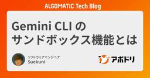
Gemini CLI のサンドボックス機能とは 49 Algomatic Tech Blog
Algomatic Tech Blog
はじめに GoogleからGeminiをコマンドラインで対話的に利用できる「Gemini CLI」が登場しましたね！ 基本的な使い方については、すでに多くの方が素晴らしい解説記事を公開されていますので、ぜひそちらもご覧ください。 参考 zenn.dev この記事では、Gemini CLIが備える機能の中でも、Claude Codeにはない「サンドボックス」機能に焦点を当てます。 リポジトリはこちら github.com この記事でわかること Gemini CLIのサンドボックス機能がなぜ必要なのか サンドボックスが有効になると、具体的に何が起きるのか -sフラグを付けるだけの簡単な使い方 ma…
4日前
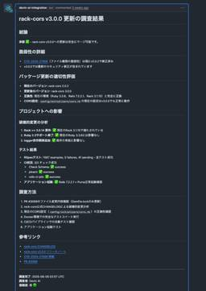
Devin × Renovate 運用効率化の第一歩 : 一次レビューをAIに任せてみた話 20 PLEX Product Team Blog
PLEX Product Team Blog
はじめに 概要 対象読者 DevinにPRレビューを任せてみた結果 Devinでレビューさせる対象PRの選定基準 対象となるPRの条件 対象のPRに対するDevinの役割 担当者の対応事項 / マージOKかの判断基準 プロンプト設定 プロンプト定義 Devinの2パターンの運用 Slackから実行 Playbooksから実行 コスト Devinは実務で使えるか 今後の運用方針 最後に 弊社の各事業部でエンジニアを求めています！ SaaS PLEX JOB コーポレート はじめに こんにちは。PLEXでPLEX JOBの開発を行っている田中です。 前回は、同じ開発メンバーの小松さんが「Devin…
3日前
Claude Code: VSCode のターミナルで実行中のタスク完了を OS 通知させたい 20 弁護士ドットコム株式会社 Creators’ blog
弁護士ドットコム株式会社 Creators’ blog
クラウドサインのエンジニアをしている辻@t0daaayです。 Claude Code の公式ドキュメントにタスク完了時の通知方法が掲載されています。 しかし、VSCode 上のターミナルで Claude Code を使いたい場合は通知音を鳴らすことしかできず、タスク完了に気づけないことが多々ありました。 iterm2 を使えば OS 通知させることは可能なようですが、VSCode の Claude Code の拡張機能の恩恵を受けられる点で VSCode 上で実行したいという気持ちがありました。 そんな中、X で AI エージェントのタスク完了を OS の通知として出力させている人を見かけまし…
4日前

Junie でいい感じにユニットテストを書いてもらうために試した事 9 Money Forward Developersのフィード
Junie とはJunie は JetBrains が開発した AI Coding Agent です。LLM を活用して、コードの生成や補完、リファクタリングなどを行ってくれます。https://www.jetbrains.com/junie/早い話が、VSCode が諸事情により使えない (Java, Kotlin や Android の開発など) JetBrains IDE ユーザーのための Cursor みたいなものです。JetBrains IDE ユーザーであれば、ある程度無料で利用することもできます。（非常に少ない Quota なので、すぐに使い切ってしまいますが）...
2日前
LLMは因果推論を理解できるのか？最新研究から探る生成AIの因果推論の可能性と課題 65 Insight Edge Tech Blog
目次 目次 背景 因果推論とLLM 因果推論 大規模言語モデル (LLM) LLM × 因果推論に関する先行研究 LLMは本当に因果関係を理解しているのか 相関から因果を推論する難しさ：Corr2Causeベンチマーク LLMの因果推論における落とし穴：時系列と反事実の課題 因果推論における「グラフ」と「順序」の重要性 LLMと因果グラフを統合 どのような使い方が良さそうか 今後の展望 終わりに 背景 データサイエンスチームの五十嵐です。本記事ではLLM×因果推論について最新論文を調査した内容をもとに考察します。 近年、大規模言語モデル（LLM）は自然言語処理の分野で目覚ましい進歩を遂げ、多岐…
6日前
Playwrightへの移行 〜ノーコードツールから乗り換えた理由と、その裏側〜 59 Nealle Developer's Blog
こんにちは、ニーリーでSET（Software Engineer in Test）を担当している宮内です。 本記事では、私が入社して最初に取り組んだ「E2Eテスト自動化ツールの移行」について、特に「なぜ移行を決断したのか」という背景と、「移行の準備・設計で工夫したこと」を中心に、その舞台裏を書きます。 E2E自動化ツールの移行は、単にツールを置き換えるだけではありません。現場の運用や開発体制にも大きな影響を与える、重要な取り組みです。 「ノーコードツールからコードベースへの移行を検討している」 「E2Eテスト自動化の体制づくりに、まさに今悩んでいる」 そんな方々にとって、私が歩んできた道のりが…
5日前

AIコーディング：「Vibe Coding」からプロフェッショナルへ 13LINEヤフー Tech Blog (LY Corporation Tech Blog
はじめに本記事は、Tech-Verse 2025で発表予定の内容を詳しくまとめたものです。個人の実践経験をもとに、AIコーディングの現場で得た知見や手法を紹介します。AIコーディングを進めるにあたり、...
4日前
Flutter界を揺るがしたLiquid Glass議論と、その実装方法まとめ 30 YOUTRUST Tech Blog
YOUTRUST Tech Blog
目次 目次 Apple最新ニュース Flutterエンジニアとしてどうすればいい？ Flutter界隈に激震が走った！ コメント全体の印象 主な論点と意見 まとめ Flutterチームのスタンス FlutterでLiquid Glassの実装 Liquid Glassの特徴 Level 1 シンプルなLiquid Glass実装 Level 2 別のシンプルなLiquid Glass実装 Level 70：先進的なLiquid Glass実装 by ImadeTheseWorks さん Level 80 超先進なLiquid Glass実装 〆 Apple最新ニュース こんにちは👋 Flutt…
5日前
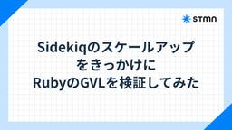
Sidekiqのスケールアップをきっかけに RubyのGVLを検証してみた 27 stmn tech blog
stmn tech blog
はじめに こんにちは、プロダクト開発部の勝間田です。 先日、サービスのパフォーマンス向上のため、ECSで稼働しているSidekiqコンテナのvCPUをスケールアップしました。増やしたCPUリソースを最大限に活用すべく、Sidekiqのconcurrencyも引き上げたのですが、CPU使用率が期待通りに上がらず、オートスケールが機能しないという事態に陥りました。 この出来事をきっかけに、CPU、プロセス、スレッド(concurrency)、そしてRubyのGVL（Global VM Lock）について自分の理解が不十分だと気づきましたので、これらについて調査・検証を行いました。 きっかけ：予期せ…
5日前
商品クリック58%増・経由受注26%増の裏側 - Two-Towerモデル×Vertex AI Vector Searchで実現したZOZOTOWN ホーム画面のパーソナライズ 42 ZOZO TECH BLOG
ZOZO TECH BLOG
はじめに こんにちは、データシステム部推薦基盤ブロックの棚本（@i6tsux）です。 ZOZOTOWNには1,600のショップ、9,000以上のブランド、100万点を超える商品が集まり、毎日2,700点もの新商品が追加されています。この膨大な商品の中から、1,000万人以上のユーザーそれぞれに「これだ」と思える商品を見つけてもらうーーそのためにパーソナライズは欠かせない技術です。 私たちのチームでは、単に好みに合う商品を見せるだけでなく、「新しい商品との出会い」も提供できるパーソナライズを目指しました。ホーム画面のモジュールに表示する商品をユーザーごとに最適な順番で並び替える仕組みを構築し、そ…
6日前
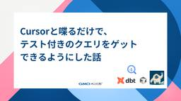
Cursorと喋るだけで、テスト付きのクエリをゲットできるようにした話 25 Pepabo Tech Portal
Pepabo Tech Portal
こんにちは！技術部データ基盤チームのmisatonです。本記事では、先日開催した開発合宿にて検証した、BigQuery のデータマートと Cursor Agent を使った信頼性の高い dbt model の生成を紹介します。開発の背景 データ活用現場の課題目指すゴールと開発合宿で行ったこと開発合宿での成果 Cursor の Agent を用いて dbt model を自動生成する仕組みの作成自動生成が可能かどうか検証するためのデータマートの作成開発合宿での成果詳細（機能デモのキャプチャあり） 分析デモ技術的な詳細処理の流れ技術スタック今後の展開まとめ開発の背景データ活用現場の課題ペパボには多数の部門・サービスのデータが蓄積されています。各部門やチームでそれぞれデータが活用される一方で、データの集計・分析をより効率的に行うための課題もあります。たとえば「この商品の売上傾向は？」「ユーザーの行動パターンは？」といったビジネス上の問いに答えるには、以下の要素が必要です。各サービス・ドメインの知識や業務経験に基づいた仮説立案既存データの構造理解やSQLスキル仮説検証から結論導出までの分析プロ
4日前
【計画編】 スカウト機能のマイクロサービス化を辞める判断について 25 Wantedly Engineer Blog
Wantedly Engineer Blog
こんにちは。ウォンテッドリーのEnablingチームでバックエンドエンジニアをしている冨永(@kou_tomina...
5日前
データカタログを社内公開するためにdbtソース定義ファイルを作った話 25 Nealle Developer's Blog
はじめに ソース定義ファイルとは？ ソース定義ファイルはなぜ作る？ yamlの生成 テーブル説明・カラム説明の追加 やってほしいこと 追記対象 カラム説明 おわりに はじめに こんにちは、Analyticsチームの清水です。 ガーゴイルゲッコーというヤモリ(8歳)とサイベリアン(1歳4ヶ月)を飼っています。とってもかわいいです。 バナナを食べています（左）ビーズクッション占領猫（右） 前回のブログでは、dbtのデータカタログ機能を使ってみた話を書かせていただきました。 nealle-dev.hatenablog.com その後、社内でよく参照されているトップ50テーブルのソース定義ファイルを作…
5日前
AI時代の挑戦型組織への変革：Sansanエンジニアリングの現在地と未来 25 Sansan Tech Blog
Sansan Tech Blog
こんにちは。SansanのVPoE、大西です。 先日、Sansan技術本部で、全エンジニアが集まる半期総会が開催されました。今回のテーマは「AI時代の挑戦型組織へ」。私はこの場で、Sansanエンジニアリングの現在地と、これからの進化の方向について語りました。 本記事では、総会で私が伝えたかったメッセージを改めてまとめています。Sansanがいま、どのような組織文化と人材を求めているのか。そして、AI時代におけるエンジニアリングの価値をどのように再定義していこうとしているのか。その輪郭を、少しでも感じていただけたら嬉しいです。
5日前
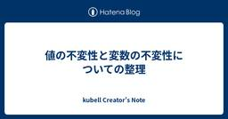
値の不変性と変数の不変性についての整理 24 kubell Creator's Note
kubell Creator's Note
はじめに 先日「関数型まつり2025」にて「成立するElixirの再束縛（再代入）可という選択 - Speaker Deck」という内容で発表させていただいたのですが、関連して、今回、いろいろな言語における値の不変性と変数の不変性について整理したいと思います。 値の不変性と変数の不変性 まず、しばしば混同されがちな「値の不変性」と「変数の不変性」の違いについてです。
5日前
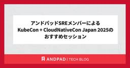
アンドパッドSREメンバーによるKubeCon + CloudNativeCon Japan 2025のおすすめセッション 10 ANDPAD Tech Blog
ANDPAD Tech Blog
こんにちは。SREチームの吉澤です。インフラコストマネジメントというプロジェクトも兼務している関係で、最近はAWSのCost Explorerを眺めることが多い毎日です。 events.linuxfoundation.org KubeCon + CloudNativeConが、6/16(月)〜17(火)に日本初開催されました！アンドパッドからはSREチームから2名（私と角井）が参加しました。 今回は、このKubeCon + CloudNativeCon Japan 2025の様子と、現地参加したメンバーによるおすすめセッションをご紹介します。これから発表資料や動画で、セッションの内容を確認する…
3日前
社内でVibe Coding Hackathonを開催してみた
37 CADDi Tech Blog
CADDi Tech Blog
こんにちは、 Drawer Growth グループの大木です。 最近（というかずっと）AIが熱いですね、エージェントモデルが出てきてコーディングの常識がまた一つ変わろうとしているように感じます もちろんキャディでもAIツールは多数導入しており、この変化に追従するために組織としてAI活用に積極的に取り組んでいます 今回はその取り組みの一環として、会社内でVibe Coding Hackathonを開催しましたのでご紹介します！ きっかけ 今年2025年の2月頃から、有志を募ってAIツールを積極的に検証していました 初期ではツールごとに推進者を立て、実際に試験的に使ってみて費用感や効果・ベスプラな…
6日前
MCPサーバーを使うなら Prompt Caching が大切だと思い知った話 35
NCDCエンジニアブログのフィード
MCPサーバーと連携するアプリ使ったら、利用料が高かったMCPサーバーと連携するチャットアプリを作っていたのですが、「開発中でほぼ自分しか使ってないのに生成AIの利用量がやたら高くね？」と思いました。ClaudeのMaxプランが月額100ドルで使い放題であることを考えると、開発中に軽く使っただけで数千円かかるアプリなんでコスパ悪すぎて、まともに使えないですね。!今回取り上げるアプリはLangChain MCP Adaptersを使って実装しています。MCP connectorなどを使えば最初からより効率的にMCPを活用できる可能性はあります。 調べてみたなぜそんな...
7日前
Gemini CLI が切り拓く！待望のエージェントモード(Agent Mode)が Gemini Code Assist に！ 【紹介編】 22 Google Cloud Japanのフィード
はじめにこんにちは、Google Cloud のアプリケーションモダナイゼーションスペシャリストの関本です。「こんなアプリが欲しいわあ、せや作ったろ」 という気持ち(ノリ、Vibes)から AI エージェントを活用してさっとコーディングを始める――そんな未来の開発スタイルを体現する、エージェントベースの開発ツールが今、大きな注目を集めていますよね！Vibe Coding とか Agentic Coding というキーワードを耳にしている方も多いと思います。また、これを読まれている方の多くは、おそらく何かしらのツールを使ったことがある人がほとんどではないでしょうか。この強力な機能...
4日前

TRICK 2025 の mame のプログラムを語る 9 STORES Product Blog
こんにちは、遠藤（@mametter）です。RubyKaigi 2025 では、変なコードで競い合う TRICK 2025 を開催しました。あらためまして、たくさんの投稿をいただき、本当にありがとうございました。 いまさらですが、自分が書いたプログラムについて語りたくなったので語ります。 Most Useful github.com 概要 patch と diff をテーマとして、とにかくたくさんの要素を詰め込んだプログラムです。 patch コマンドとして動く そのまま patch ファイルとしても解釈できる 自分自身へのパッチを出力し、中心にある "p" のロゴを徐々に半回転して "d" …
4日前
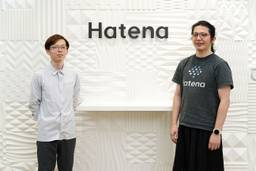
Classiで活躍中のid:aerealを訪問 | はてな卒業生訪問企画 [#15] 32 Hatena Developer Blog
Hatena Developer Blog
連載企画「卒業生訪問インタビュー」 第15回のゲストは、Classi株式会社でエンジニアとして幅広く活躍されている id:aereal こと、中澤亮太さんです。はてな エンジニアリングマネージャーのid:onkがお話を伺いました。
7日前
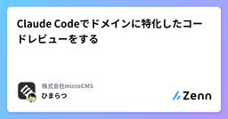
Claude Codeでドメインに特化したコードレビューをする 19
株式会社microCMSのフィード
Claude CodeにはGitHub連携があり、Issueから実装を指示したり、Pull Requestのレビューを依頼したりできます。デフォルトの状態でも言語やフレームワーク、周辺コードに基づいたレビューをしてくれて大変有用ですが、サービス仕様の観点から深掘ったレビューが出来るとさらに安心感がありそうです。この記事ではClaude Codeにレビュー観点を与え、期待する切り口でPRをレビューしてもらう方法を紹介します。 作りたいもの用意した観点に基づき、Claude Codeがレビューしてくれる仕組み。大まかなポイントはこんな感じです：サービスの仕様 / 実装で間違え...
5日前
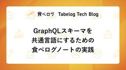
GraphQLスキーマを共通言語にするための食べログノートの実践 19 Tabelog Tech Blog
Tabelog Tech Blog
目次 目次 はじめに 食べログノートの開発体制 保たれていた秩序 GraphQLを導入した背景 クライアント要求への柔軟性の向上 並行開発を促進する、スケーラブルな開発体制の確立 専任の管理者不在でGraphQLを運用 開発拡大で露呈したスキーマ運用の課題 レビューコストの増大 スキーマに対する認識のズレ クライアントサイドの実装都合のスキーマ サーバーサイドの実装都合のスキーマ スキーマを「チーム間の共通言語」にする 「疎結合」と「密なコミュニケーション」 密なコミュニケーションを促進するための取り組み 開発初期段階からの共同参画 設計思想を問うスキーマレビュー 共通言語がもたらした組織的な…
5日前
BigQueryで自由記述形式のデータを分類する方法 Part 1 29 Nealle Developer's Blog
はじめに Park Directでは利用者が駐車場契約の申し込みをキャンセルする時に理由を自由記述形式で入力してもらっています。なぜなら、サービスの改善や顧客満足度向上に不可欠な情報だからです。 また、 キャンセル理由をカテゴリに分類することで、 傾向の把握: どんな理由でキャンセルが多いのか具体的な傾向を数字で把握する 課題の特定: サービスやプロダクトの改善点、顧客サポートの強化すべき点を明確にする 優先順位付け: 影響の大きいキャンセル理由から優先的に施策を講じる 施策の効果測定: 改善施策がキャンセル率にどう影響したか、カテゴリ別に測定できる が行いやすくなります。 しかし、自由記述形…
7日前
既存の Angular アプリケーションの Zoneless 化への道のり 27 Nealle Developer's Blog
はじめに こんにちは、ARCH チームの立川です。 先日、Angular v20 がリリースされましたね。 https://blog.angular.dev/announcing-angular-v20-b5c9c06cf301 今回のリリースで v18 から Experimental であった Zoneless（Zone.js に依存しない変更検知） が Developer Preview に昇格しました。新しくアプリケーションを作成される方はインストール時に Zoneless を選択するかどうかの確認が入ります。まだまだ先の話かと思いますが、現在 Zone.js を使用しているアプリケーシ…
6日前
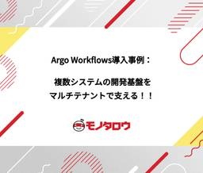
Argo Workflows導入事例： 複数システムの開発基盤をマルチテナントで支える！！ 15 MonotaRO Tech Blog
MonotaRO Tech Blog
はじめに モノタロウのプラットフォームエンジニアリング部門 コンテナ基盤グループの宋 明起です。 私たちコンテナ基盤グループは、アプリケーション開発者がコンテナシステムの複雑さに悩まされることなく、アプリ開発に専念できる環境を提供しています。コンテナ基盤の構築・改善を通じて、開発者がより簡単かつ安全にアプリケーションをデプロイ・運用できるように支援しています。 はじめに 背景 共通の課題 コンテナプラットフォームでのジョブ運用 Argo Workflowsを選定した理由 マルチテナント環境でのArgo Workflowsの構築と運用に関する検討 マルチテナント環境における運用上の課題 検討ポイ…
4日前
Amazon Auroraのエンドポイントを変えずにKMSキーを交換する方法 21 Nealle Developer's Blog
はじめに こんにちは。SREチームの森原(@daichi_morihara)です。最近はゴルフにはまっており、先日初めてラウンドをまわりました。スコアは138😇😇😇、伸び代ですね。 今回はAmazon Auroraのクロスアカウントバックアップの実装と、その際に生じたAmazon AuroraのKMSキーの差し替え作業で得た学びを共有しようと思います。 前提 AWS Backupというサービスを利用してAmazon Auroraのクロスアカウントバックアップを実装しました。AWS BackupはAmazon Auroraに限らず、RDSやDynamoDBなどの多くのサービスのバックアップを簡単…
6日前

`Ractor::Port` ― Ractor の API を一新した話 15 STORES Product Blog
本稿では、Ruby で並列処理を手軽に実現するための機構 Ractor の API について、以前から気になっていた部分を最近になって一新し、`Ractor::Port` というものを導入したので、その内容をご紹介します。
6日前
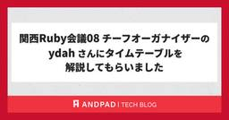
関西Ruby会議08 チーフオーガナイザーの ydah さんにタイムテーブルを解説してもらいました 10 ANDPAD Tech Blog
こんにちは、 id:sezemi です。 息子が、所属するサッカークラブの初めての公式戦でスタメンを外され、試合の 3/4 が終了したところで交代出場というほろ苦デビューを飾りました。 試合後ふてくされていた息子に、妻が一喝し、そのまま夜の 21 時から練習に行くという、なかなかのスポ根ドラマが繰り広げられています。 がんばれ、息子氏。 さて、そんな熱いドラマがまもなく開幕しますね。 そう、 関西Ruby会議08 が 6/28 に開催されます ! regional.rubykaigi.org アンドパッドも 関西Ruby会議08 には 竹 & Drinkup スポンサーとして協賛しており、 6…
6日前

JavaScriptのif/else地獄をリファクタリングで解消する（翻訳） 4 TechRacho
TechRacho
概要 元サイトの許諾を得て翻訳・公開いたします。 英語記事: Refactoring an if/else hell in JavaScript | Rails Designer 原文公開日: 2025/06/06 原著者: Rails Designer -- Railsフロントエンド関連記事に加えて、ViewComponentとTailwind CSSを用いた美しいUIコンポーネントを販売しています 利便性のため、コードのdiffも追加しています。 JavaScript: if/else地獄をリファクタリングで解消する（翻訳） 本記事は、私の近著『JavaScript for Rails Developers』 […]The post JavaScriptのif/else地獄をリファクタリングで解消する（翻訳） first appeared on TechRacho.
5日前

PTP 高精度時刻同期サービスを始めました 6 IIJ Engineers Blog
IIJ Engineers Blog
今回はIIJのグループ会社である、IIJエンジニアリングの土屋がサービスの裏話について執筆してくれた内容を紹介します。 サービス開発にあたり PTPをNTPのように使いたい！と思っても、そう簡単には導...
6日前
ウォンテッドリー開発チームが「夏のアドベントカレンダー」を開催します 5 Wantedly Engineer Blog
こんにちは、ウォンテッドリー株式会社 執行役員 VPoE の要 (@nory_kaname )です。開発組織のマネ...
6日前
関西Ruby会議08に「『1ヶ月でWebサービスを作る会』で出会った rails new、 そして今に至る rails new」というタイトルで登壇します 3 Classi開発者ブログ
Classi開発者ブログ
こんにちは、Classi でソフトウェアエンジニアをやっている id:kiryuanzu です。 2025年6月28日(土) に京都府京都市の先斗町歌舞練場にて開催される関西Ruby会議08で「『1ヶ月でWebサービスを作る会』で出会った rails new、そして今に至る rails new」というタイトルで登壇させていただくことになりました。 regional.rubykaigi.org 今回はこの発表のプロポーザルを提出した時の背景や、登壇の意気込みについて事前にお伝えしたいと思います。 プロポーザルを提出した際の背景 実は、LT形式ではない少し長めの発表(今回は20分)のプロポーザルを…
4日前
検索結果0件を回避するためのクエリ書き換えアプローチ 3 ZOZO TECH BLOG
はじめに こんにちは、データサイエンス部の朝原です。普段はZOZOTOWNにおける検索の改善を担当しています。 ZOZOTOWNには100万点を超える商品が存在し、毎日2700点もの新商品が追加されています。このような膨大な商品数を扱うZOZOTOWNにおいて、ユーザーが求める商品を見つけやすくするための検索機能は非常に重要です。 一方で、ファッションという日々ニーズが激しく変化するドメインにおいて、ユーザーのニーズを検索クエリから正確に把握し、適切な商品を提示することは困難を伴います。特に、検索システムにおいて検索結果が0件である（以下 0件ヒット）ことはユーザーにとって悪い体験となり、離脱…
5日前
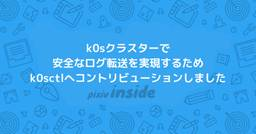
k0sクラスターで安全なログ転送を実現するためk0sctlへコントリビューションしました 4 pixiv inside
pixiv inside
こんにちは、lyluckです。 ピクシブではオンプレミスKubernetes(以下、k8s)クラスターを運用しています。 既存アプリケーションのk8s移行は依然として進行中で、クラスターの規模は以前と比べて倍の20台程度になっています。 アプリケーションをk8s移行するには、アプリケーションログの転送機能も一緒にk8sへ移行する必要があります。 今回はk8sにおけるログ転送時のログ欠損を抑えるために取り組んだことを紹介します。 背景 k8s移行対象のアプリケーションには転送が必要なログを生み出すものがあります。 次の図のように、Fluentdがログをアプリケーションがあるサーバーとは別のサーバ…
6日前
セキュリティカンファレンス「Botconf 2025」に登壇してきた話 4 NTT Communications Engineers' Blog
NTT Communications Engineers' Blog
こんにちは、NTT Com イノベーションセンターのNetwork Analytics for Security（NA4Sec）プロジェクトです。 この記事では、2025年5月20日-23日に開催されたセキュリティカンファレンスBotconf 2025について紹介します。 Botconfとは Team NA4Secとは 講演内容 カンファレンスの様子 おわりに Botconfとは Botconfは"The Botnet & Malware Ecosystems Fighting Conference"の略称で、その名の通り、ボットネットやマルウェアエコシステムに特化した国際的なセキュリティカン…
6日前
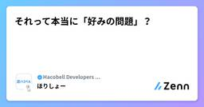
それって本当に「好みの問題」？ 4 Hacobell Developers Blogのフィード
3行まとめ「好みの問題」は思考停止のサイン「好みの問題」が逃げ道になる理由は心理的負荷と言語化スキル不足「好みの問題」を議論の終着点ではなく議論の出発点にしよう はじめにあなた：「ここは〇〇とした方がいいと思う」相手：「いや、私は△△の方がいいと思う」あなた：「コードの可読性を踏まえると、〇〇の方がいいと思う」相手：「△△でも読みやすいから好みの問題だと思う」チームで何かを決めるときやレビューの場面で、こうしたやり取りを見聞きしたことがある人は多いのではないでしょうか。特に設計の方向性やコードスタイル、UIデザインのように絶対的な正解が存在しないテーマでは...
6日前
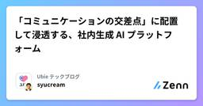
「コミュニケーションの交差点」に配置して浸透する、社内生成 AI プラットフォーム 3 Ubie テックブログのフィード
「社内の生成 AI 活用がもっと劇的に進めばいいのに」生成 AI の進化は激しく有用な存在になってきたものの、それを業務で、個ではなく集団として活用するにはハードルが高いです。しかし「興味のあるごく少数の個人がやっている」程度の活用範囲に限られてしまうと、劇的な生産性向上なんて望めません。Ubie ではこの状況を打破して、会社・集団として生成 AI を活用して生産性を上げるための工夫を、 社内ツール Dev Genius を中心に行なっています。これは初期は「ChatGPT の社内版」程度の存在だったのですが、それをどうやって組織全体の力に変えたのか。その鍵は、 「コミュニケーション...
6日前

決済アプリの SwiftUI 導入に伴う取り組み 〜 アーキテクチャ変更について 〜 3 STORES Product Blog
はじめに @kotetu こと栗山です。今年の 4 月に STORES に入社しました。今回が、入社して初めての担当記事となります。 今回は、筆者が開発を担当している STORES 決済 の iOS アプリ (以後、 "決済アプリ" と記載) の開発チームで現在進行形で実施している取り組みについて、筆者が対応したとある案件で実際に経験したことや入社 2 ヶ月半の立場からの所感をベースに紹介します。 とある画面のアーキテクチャ変更対応 決済アプリでは、2025 年から SwiftUI の導入を徐々に進めており、一部画面については画面実装が SwiftUI ベースとなっています。 SwiftUI …
6日前